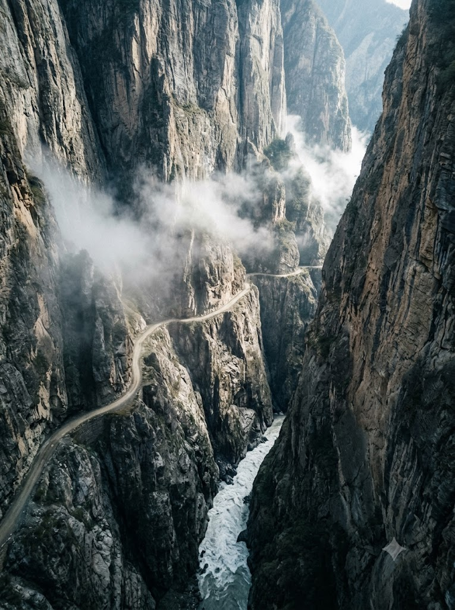
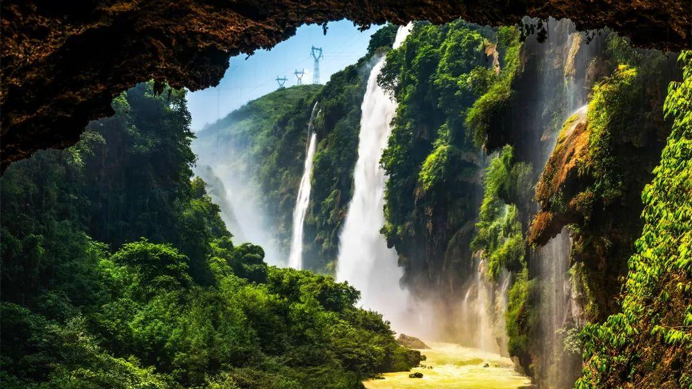

🚁 任务 5: 终极侦察 - 深渊凝视 (横断山脉垂直测绘)
💡 战术指挥中心下达写作指令：
特工 William，大自然在横断山脉设下了最可怕的“V字型”深渊防线。现在，你正站在悬崖的最边缘，手里操控着一台“战隼”侦察无人机。指挥部为你传回了两张绝密影像：一张是无人机的高空俯拍，一张是站在悬崖边缘的第一人称视角。
👉 你的写作任务：
请结合这两张侦察照片，写一份 150 字左右的《峡谷测绘报告》。你必须按照“无人机镜头从山顶，垂直向下移动到谷底”的空间顺序来写，让没看过照片的人，也能跟着你的文字感到头晕目眩！
🔴 视角一：高空无人机俯拍

🔴 视角二：第一人称悬崖凝视

🎥 【无人机镜头控制台 - 写作提示】
- [镜头1 - 平视山顶]：峡谷两边的绝壁是什么样的？（可用词：刀削斧劈、拔地而起、直插云霄）
- [镜头2 - 俯视悬崖]：结合第一人称视角的照片，镜头往下推，看着脚底的万丈深渊，你有什么感觉？（可用词：头晕目眩、深不见底、令人窒息）
- [镜头3 - 探底大河]：最底下的江水看起来像什么？声音大吗？（可用词：汹涌澎湃、咆哮的白龙、震耳欲聋）